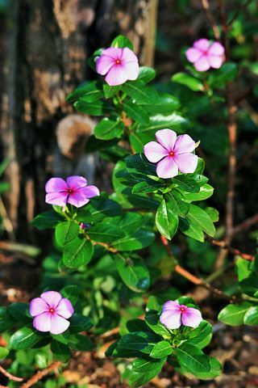

Las hojas de esta planta son muy apreciadas en Estados Unidos y Reino Unido. En estos países importan 10 toneladas de esta planta cada año. La pervinca rosa está en peligro de extinción, ya que los terrenos donde crece son usualmente quemados o modificados para su uso en la agricultura y la ganadería. Puede tener uso ornamental, porque crece fácilmente en jardines y patios.
Tiene un aroma suave y delicado, casi imperceptible.
Necesita buena iluminación para florecer correctamente.
Puede recibir de 4 a 6 horas de sol directo al día.
Riego moderado, manteniendo la tierra ligeramente húmeda.
En épocas frías, reducir la cantidad de agua.
Evitar encharcar la tierra para prevenir daños en las raíces.
Retirar flores marchitas y hojas secas para estimular nuevas flores.
La poda ligera ayuda a mantener su forma compacta.
La Pervica rosa florece durante gran parte del año en climas cálidos.
Es muy utilizada como planta ornamental por sus colores suaves y delicados.